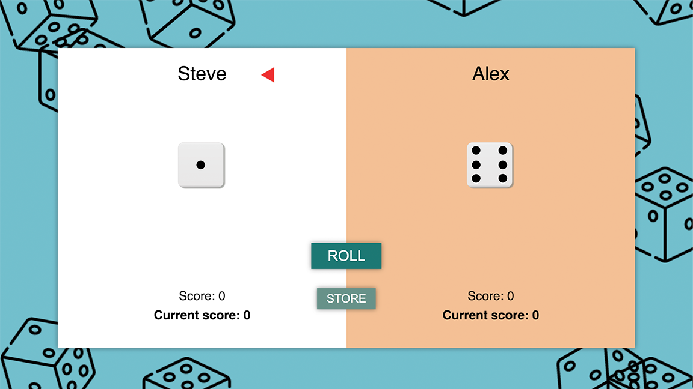
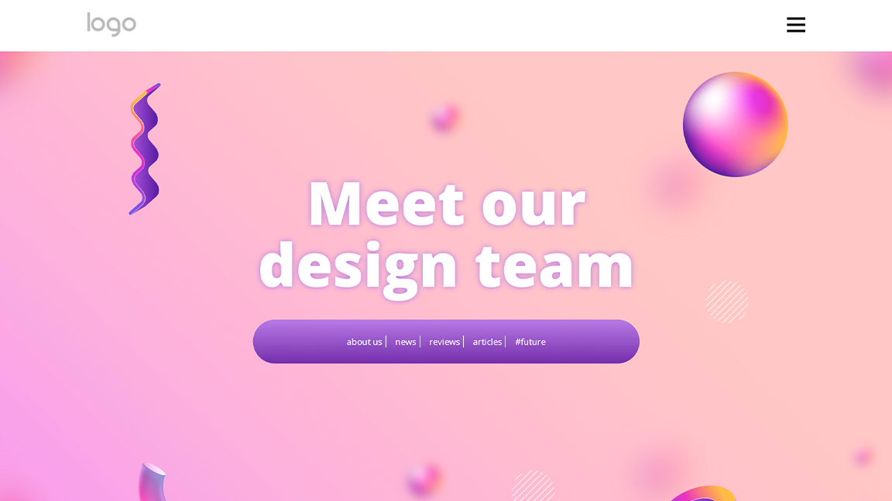
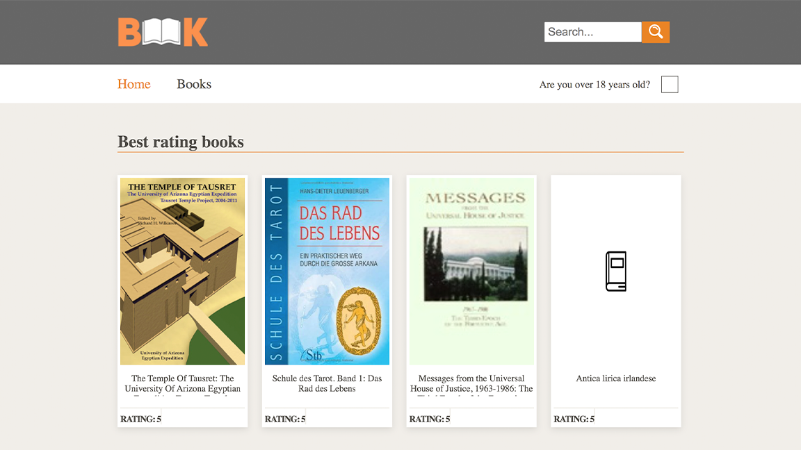

Zdravo svete,
Ja sam Sanja, i ja
sam
Front-end developer
Ja sam osoba koja obraća pažnju na detalje i voli kako kreativne, tako i logičke aspekte veb razvoja. Konstantno nastojim da unapredim svoje veštine i prihvatam nove izazove.
Pogledajte moj radO meni

Moje ime je Sanja Mišić, imam 24 godine i živim u Nišu, Srbiji. Ja
sam junior front-end developer i uzbuđena sam da nastavim da učim i
napredujem u ovoj oblasti. Još od detinjstva, tražim načine da
izrazim svoju kreativnost i stvaram. Posao front-end developera mi
je omogućio da to uradim na najbolji mogući način. Ne samo da
uključuje kreativni aspekt koji volim, već ima i logičku stranu koja
me duboko interesuje.
Diplomirala sam na Filozofskom fakultetu sa zvanjem iz filozofije.
Moj završni rad istraživao je Veštačku inteligenciju i njena
potencijalna ograničenja sagledana kroz filozofsko-logičku
perspektivu. Zahvaljujući...
About me
Zovem se Sanja Mišić, imam 24 godine i živim u Nišu, u Srbiji. Ja
sam junior front-end developer i uzbuđena sam da nastavim da učim
i napredujem u ovoj oblasti. Još od detinjstva tražim načine da
izrazim svoju kreativnost i da stvaram, a posao front-end
developera mi to omogućava. Ne samo da uključuje kreativni aspekt
koji volim, već ima i logičku stranu koja me tekođe interesuje.
Diplomirala sam na Filozofskom fakultetu sa zvanjem iz filozofije.
Moj završni rad istraživao je Veštačku inteligenciju i njena
potencijalna ograničenja sagledana kroz filozofsko-logičku
perspektivu. Zahvaljujući svom formalnom obrazovanju, razvila sam
sposobnost kritičkog i analitičkog razmišljanja koje mi pomaže u
rešavanju problema, debagovanju i kreiranju dobro strukturiranog
koda.
Još jedna stvar koja me uverava da je ovaj posao savršen za mene i
moj tip ličnosti je činjenica da posao nije statičan, već pruža
mogućnost kontinuiranog učenja i napredovanja.
Ja sam tip osobe koja uživa u rešavanju zadataka i izazova, svaki
projekat vidim kao novi izazov koji treba rešiti. Moja analitička
priroda mi omogućava da pristupim projektima sistematski. Svaki
projekat razložim na manje zadatke i rešavam ih postepeno, korak
po korak, obraćajući pažnju na detalje.
Kada nisam za računarom, svoju kreativnost iskazujem na drugačiji
način. Bavim se dizajnom noktiju, gde se fokusiram na detalje i
estetiku. Pored toga, uživam u plesu i fitnesu, što mi pomaže da
održim ravnotežu između fizičke i mentalne aktivnosti. Takođe,
volim da provodim vreme u prirodi i da šetam, gde upijam energiju
i punim baterije za dalji rad.
Više o mom iskustvu i obrazovanju možete pronaći u mom
CV-u.
Tehnologije
Html5
Css3
Sass
JavaScript
GitHub
Figma
Moji projekti
Ova sekcija prikazuje neke od mojih ličnih projekata koje sam kreirala kako bih razvijala i usavršavala različite aspekte front-end developmenta. Ispod, možete pogledati neke od ovih projekata i bolje se upoznati sa mojim stilom kodiranja i dizajniranja.
Lira Excellent
Html5
Css3
Sass
JavaScript
Api
Ovaj projekat predstavlja veb sajt za prenićište napravjen na osnovu zahteva mog klijenta. Zadužen sam kako za dizajn, tako i za njegovu implementaciju."

User search app
Html5
Css3
Sass
JavaScript
Api
Figma
Ovaj projekat predstavlja rešenje za izazaov sa Frontend Mentor platforme. Dizajn je implementiran praćenjem figma fajla.

Dice game
Html5
Css3
Sass
JavaScript
Dice game je projekat baziran na JavaScript-u koji pokazuje moju sposobnost da izradim jednostavne igrice. Opcije uključuju bacanje kocke, praćenje bodova, objavljivanje pobednika...
Nice site
Html5
Css3
Sass
JavaScript
Ovaj projekat pretstavlja rekreiranje dizajna veb stranice. Tokom izrade projekta fokusirala sam se na unapređivanje kreiranja animacija i korišćenje Intersection Observer-a.
Bookstore
Html5
Css3
Sass
JavaScript
Bookstore projekat pokazuje moje veštine manipulacije JSON podacima. Funkcionalnosti uključuju prikazivanje knjiga po žanru, funkciju pretrage, kao i verifikaciju starosne dobi za sadržaj namenjen odraslima...
Kontaktirajte me
Takođe, ako imate neke sugestije ili ideje o tome kako mogu poboljšati svoj portfolio ili bilo koji od svojih projekata, bio bih vam zahvalan ako biste ih podelili sa mnom. Učenje i napredovanje su mi važni, pa cenim svaku povratnu informaciju koja mi može pomoći da postignem svoje ciljeve.
Možete me kontaktirati na telefon 063/7813-713 ili putem e-pošte na adresu sanjamisic98@gmail.com